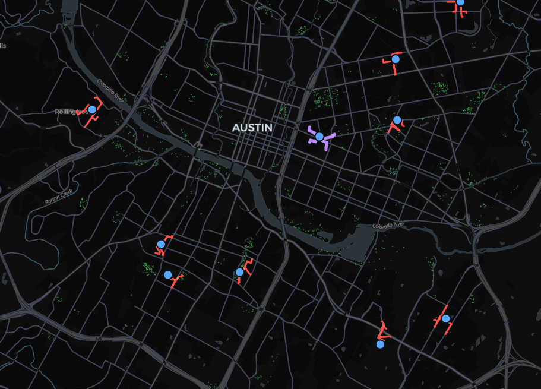
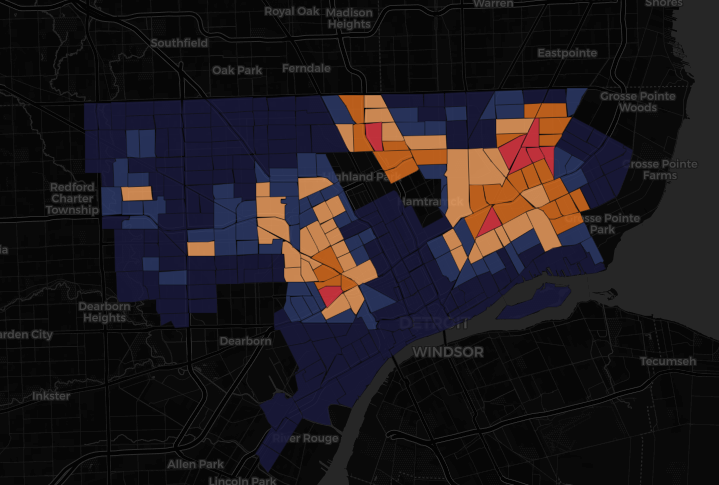
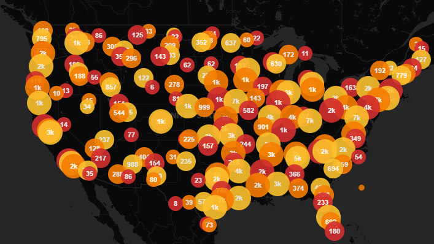
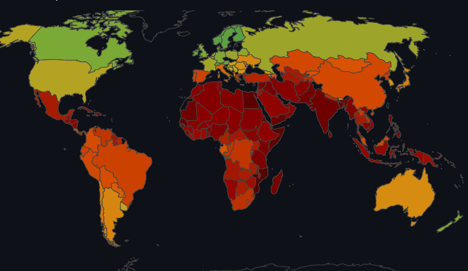
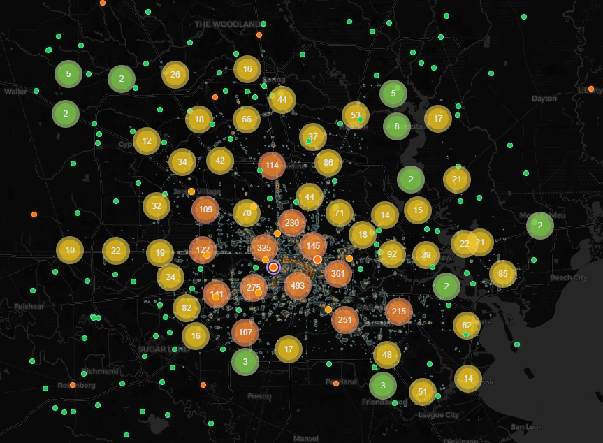
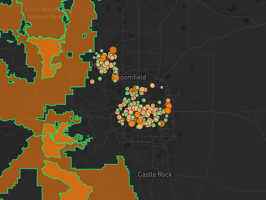
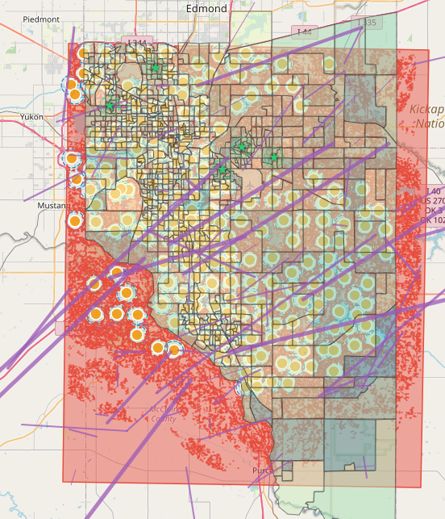
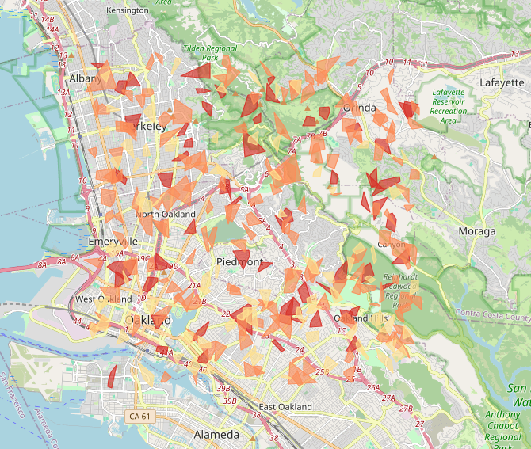

Featured Work

The Shade Deficit
Analyzes tree canopy coverage gaps along school walking routes in Austin, TX to map shade equity disparities against demographic data.
View project
Blight Contagion
Tests the contagion hypothesis that property abandonment in Detroit spreads spatially to neighboring parcels, using spatial autocorrelation and predictive modeling.
View project
Power Grid Fragility
Nationwide blackout vulnerability index across 3,144 US counties, combining grid reliability, weather hazards, demographic risk, and FEMA NRI data into a weighted composite score.
View project
Police Response Deserts
Spatial analysis of Detroit 911 call data examining whether police response times correlate with neighborhood race and income using OLS regression.
View project
Bridge Collapse Risk
Composite risk scoring across 617,597 US highway bridges using FHWA inspection data — weighting structural condition, traffic exposure, age, detour impact, and scour vulnerability.
View project
Crash Anatomy
Interactive visualization of 185,000+ fatal US traffic collisions (2019–2023), filterable by year, crash type, road type, and location setting using NHTSA FARS data.
View project
US Schools — Highway Noise Exposure
National analysis of ~67,000 public elementary schools modeled against WHO cognitive development thresholds, examining whether low-income communities face disproportionate highway noise impacts.
View project
Climate Migration Risk Model
Interactive risk model identifying regions most vulnerable to climate-driven displacement by combining temperature anomalies, sea level rise, drought indices, and socioeconomic factors to forecast migration pressure hotspots.
View project
Ghost Infrastructure — Storage Tank Risk
Interactive map of Harris County leaking underground storage tank sites integrating soil, groundwater, and TCEQ registry data to score contamination risk to drinking water wells and prioritize remediation.
View project
Dark Sky Erosion Tracker
Tracks artificial radiance changes across Colorado's Front Range from 2012–2024 using satellite night-lights data, identifying development impacts on wildlife corridors and dark sky preservation areas.
View project
The Commuter Gap
Maps transit deserts and commuter accessibility disparities, revealing where low-income workers face the greatest mismatch between residential location and job centers.
View project
The Siren Gap
Identifies tornado warning dead zones in the Moore/Norman/OKC region where sound levels fall below 70 dB, pinpointing 2,236 km² of inadequate coverage affecting ~246,000 residents.
View project
The Cul-de-Sac Trap
Ranks Oakland/Berkeley Hills subdivisions by evacuation vulnerability using road network topology metrics to expose neighborhoods with critically limited egress routes during wildfires or emergencies.
View project
Cemetery Sprawl — Chicago
Examines urban land locked in perpetual non-use by mapping Chicago cemeteries against demographic patterns, transit access, and historical HOLC redlining boundaries to reveal deep spatial inequities.
View project
The Ambulance Paradox
Maps EMS response time disparities across Dallas–Fort Worth to identify zones where response times exceed cardiac survival thresholds, overlaying heart disease prevalence to quantify mortality risk by geography.
View project
Subsidence Sentinel
Visualizes combined ground subsidence and sea level rise threatening Houston-Galveston, where localized sinking rates exceed 25 mm/yr, mapping accelerating flood vulnerability across critical coastal infrastructure.
View project
Freshwater Conflict Intelligence Platform
Transboundary water stress and geopolitical instability analytics using a Water Stress Conflict Index, Random Forest risk classification, spatial autocorrelation, and SSP climate scenario projections.
View project
Mexico Vacation Destination Suitability
Interactive multi-criteria decision analysis tool ranking Mexican destinations by accessibility, climate comfort, safety, and tourism amenities — with customizable traveler profiles and weighted overlays.
View project
Global Food Security Early Warning System
Spatiotemporal dashboard forecasting agricultural failure and famine risk using NDVI anomalies, climate stress indices, conflict proximity, and ML-based IPC phase forecasting 6 months ahead.
View project
Chicago NDVI Monitor
Urban vegetation intelligence platform tracking greenspace health across Chicago using Sentinel-2 satellite imagery, PostGIS, and AWS Cloud Optimized GeoTIFFs with time-series analysis and degradation flagging.
View project
Wildfire Risk & Evacuation Planner
Web mapping application for visualizing California wildfire perimeters, modeling fire risk by time of day, and generating dynamic evacuation routes.
View project
Illinois Broadband Gap Analysis
Interactive tool mapping fixed and mobile broadband coverage gaps across Illinois communities, combining Leaflet mapping with dynamic Chart.js analytics.
View project
Wisconsin Nitrate & Cancer Analysis
IDW interpolation and linear regression exploring links between agricultural nitrate contamination and cancer rates across Wisconsin census tracts.
View project
Florida Gated Communities Map
Interactive Leaflet map exploring gated communities across Florida with clustering, price-range filtering, and detailed community profiles.
View project